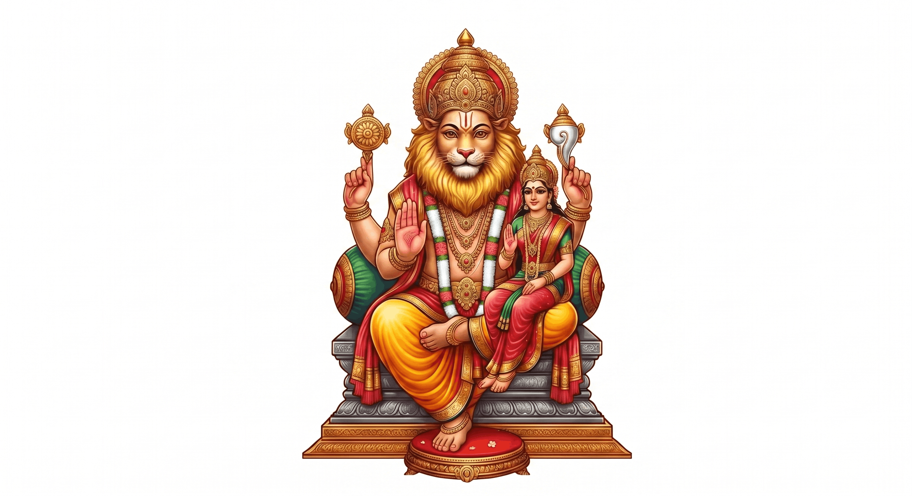

✨ అక్షరాల శైలి

మన గుడి – మన అందరి బాధ్యత
👈 ఎడమ వైపునకు స్వైప్ చేసి చదవండి
పచ్చని పంట పొలాల మధ్య ప్రశాంతమైన వాతావరణం... ఆలయ ప్రాంగణమంతా ఒక దివ్యమైన నిశ్శబ్దం అలుముకుని ఉంటుంది. సరిగ్గా ఆ సమయంలో, గర్భగుడిలో కొలువై ఉన్న ఆ శ్రీ లక్ష్మీనరసింహ స్వామి వారి విగ్రహం నుండి ఒక అద్భుతమైన, తేజోవంతమైన కాంతి పుంజం ఉద్భవిస్తుంది. ఆ దివ్య ప్రకాశం తూర్పు దిశగా సాగుతూ, పొలాల్లో ఉన్న పురాతన బావి వైపు ప్రయాణిస్తుంది.
అవును! లోకరక్షకుడైన ఆ నరసింహ స్వామి ప్రతిరోజూ కాంతి రూపంలో ఆ బావి చెంతకు వెళ్ళి, పవిత్ర స్నానమాచరించి (జలకాలాడి), తిరిగి ఆలయ గర్భగుడికి చేరుకుంటారు. ఈ పరమ అద్భుతాన్ని కళ్ళారా వీక్షించిన భక్తులు ఎందరో ఉన్నారు!
సంతానం లేక, జీవితంలో వెలుగు కరువై, సమాజంలో ఎన్నో నిందలు భరిస్తూ అల్లాడిపోయే మహిళలకు ఈ క్షేత్రం ఒక కల్పవృక్షం.
నమ్మకంతో, ఆర్తితో ఈ ఆలయ గడప తొక్కి, కన్నీళ్లతో స్వామివారిని వేడుకున్న ఏ తల్లి కూడా ఖాళీ చేతులతో తిరిగి వెళ్లలేదు. ఇక్కడి అమ్మవారి కరుణ, స్వామివారి అనుగ్రహం వల్ల ఎందరో మహిళల గర్భఫలం పండింది. సంతానం పొందిన ఆ తల్లులు తమ పిల్లలతో కలిసి వచ్చి స్వామివారికి మొక్కులు చెల్లించుకోవడమే ఈ మహిమకు సజీవ సాక్ష్యం.
దుష్టశక్తుల పీడతో, మానసిక వేదనతో, శారీరక నరకయాతన అనుభవించే వారికి ఈ కాంతిగిరి క్షేత్రం ఒక దివ్యౌషధం.
ఎలాంటి దుష్టశక్తులైనా సరే... ఈ ఆలయ ప్రాంగణంలోకి అడుగుపెట్టగానే ఆ ఉగ్ర నరసింహుని ప్రచండ తేజస్సుకు భయపడి కంపించిపోతాయి. స్వామి వారి ఉగ్ర రూపం ముందు ఏ దుష్టశక్తి నిలువలేదు. ఇక్కడికి వచ్చిన బాధితులు క్షణాల్లో ఆ పీడల నుండి విముక్తులై, ప్రశాంతమైన మనస్సుతో, ఆరోగ్యంతో తమ ఇళ్లకు తిరిగి వెళ్తారు.
ప్రతిసంవత్సరం పెంచుల పౌర్ణమి పర్వదినాన్ని పురస్కరించుకుని శ్రీ కాంతిగిరి లక్ష్మీనరసింహ స్వామి వారి వార్షిక బ్రహ్మోత్సవాలు మూడు రోజుల పాటు అత్యంత వైభవంగా జరుగుతాయి. ఈ మూడు రోజులు స్వామివారు కొలువై ఉన్న పవిత్ర కొండ సరికొత్త శోభను సంతరించుకుంటుంది.
ఆలయ ప్రాంగణమంతా రంగురంగుల విద్యుత్ దీపాలతో (Full Lighting Decoration) కన్నుల పండుగగా అలంకరిస్తారు. రాత్రి వేళల్లో కొండ మొత్తం ఒక దివ్యమైన జ్యోతిలా ప్రకాశిస్తుంది.
బ్రహ్మోత్సవాల మొదటి రోజున ఉభయ దాతల సమర్పణల అనంతరం ఆలయంలో శ్రీ లక్ష్మీనరసింహ స్వామివారి దివ్య కల్యాణ మహోత్సవం అత్యంత వైభవంగా జరుగుతుంది. కల్యాణానంతరం స్వామివారు ప్రత్యేక వాహన సేవపై కొండ దిగి వస్తారు.
చుట్టుపక్కల ఉన్న అన్ని గ్రామాలలో స్వామివారి అంతర్గ్రామ ప్రదక్షిణ (గ్రామ రౌండ్ ట్రిప్) సాగుతుంది. గ్రామస్తులందరూ స్వామివారికి మంగళహారతులు ఇచ్చి, కానుకలు సమర్పించుకుంటారు. అనంతరం భక్తుల జయజయధ్వానాల మధ్య స్వామివారు రాత్రికి తిరిగి కాంతిగిరి ఆలయ గర్భగుడికి చేరుకుంటారు.
రెండవ రోజు అత్యంత పవిత్రమైన ఘట్టం. ఈ రోజు రాత్రి వేల సంఖ్యలో వచ్చే భక్తులు ఇళ్లకు వెళ్లకుండా ఆలయ కొండ ప్రాంగణంలోనే, నక్షత్రాల నీడన నిద్రిస్తారు (రాత్రి జాగరణ సేవ).
ఈ పవిత్ర కొండపై బ్రహ్మోత్సవాల వేళ నిద్రిస్తే... ఉగ్ర నరసింహ స్వామి వారి ప్రచండ కిరణాలు భక్తులపై పడి, వారి ఒంటిపై ఉన్న సమస్త రోగాలు, మానసిక పీడలు మరియు దుష్టశక్తులు నశిస్తాయని భక్తుల అచంచలమైన నమ్మకం.
మూడవ రోజున బ్రహ్మోత్సవాల ముగింపు వేడుకగా గ్రామ వీధుల్లో "వసంతోత్సవం" అత్యంత కోలాహలంగా జరుగుతుంది. స్వామివారి పల్లకీ సేవ ముందు భక్తులు పవిత్రమైన రంగుల వసంతాన్ని (రంగుల వేడుక) జల్లుకుంటూ నృత్యాలు చేస్తారు.
ఈ వసంత తీర్థం ఒంటిపై పడితే జన్మ ధన్యమౌతుందని భావించి పల్లెటూరి ప్రజలందరూ ఈ వేడుకలో పాల్గొంటారు. దీనితో మూడు రోజుల బ్రహ్మోత్సవాలు మంగళప్రదంగా ముగుస్తాయి.
బ్రహ్మోత్సవాల మొదటి రెండు రోజులు (రోజు 1 మరియు రోజు 2) కొండపైకి వచ్చే భక్తులందరికీ ఆలయ సమితి మరియు దాతల ఆధ్వర్యంలో నిరంతర మహా అన్నదాన కార్యక్రమం జరుగుతుంది.
దూర ప్రాంతాల నుండి వచ్చే ఏ ఒక్క భక్తుడు కూడా ఆకలితో వెళ్లకుండా, స్వామివారి ప్రసాదాన్ని తృప్తిగా స్వీకరించేలా అన్ని ఏర్పాట్లు చేయబడతాయి.
కానుక తర్వాత మీ పేరు నమోదు కోసం 9876543210 కు కాల్ చేయండి
ప్రతి శనివారం ఉదయం హాఫ్-డే ఆలయ శుభ్రత సేవలో భాగస్వాములు అవ్వండి. వాలంటీర్లకు ఆలయ నిధి నుండి ₹100 గౌరవ దక్షిణ మరియు ఉచిత అల్పాహారం (Breakfast) అందజేయబడును.
శ్రీ సి. రామచంద్రయ్య గారి సహకారంతో మంజూరైన రూ. 10,00,000/- ప్రభుత్వ నిధితో పాటు స్వామి వారి ఆలయ నిర్మాణానికి విరాళాలందించిన భక్తుల వివరాలు:
👆👇 పైకి క్రిందికి స్క్రోల్ చేసి మీ పేరు చూడండి
💡 మీ పేరులో ఏవైనా తప్పులు ఉంటే పూజారి గారిని సంప్రదించగలరు.